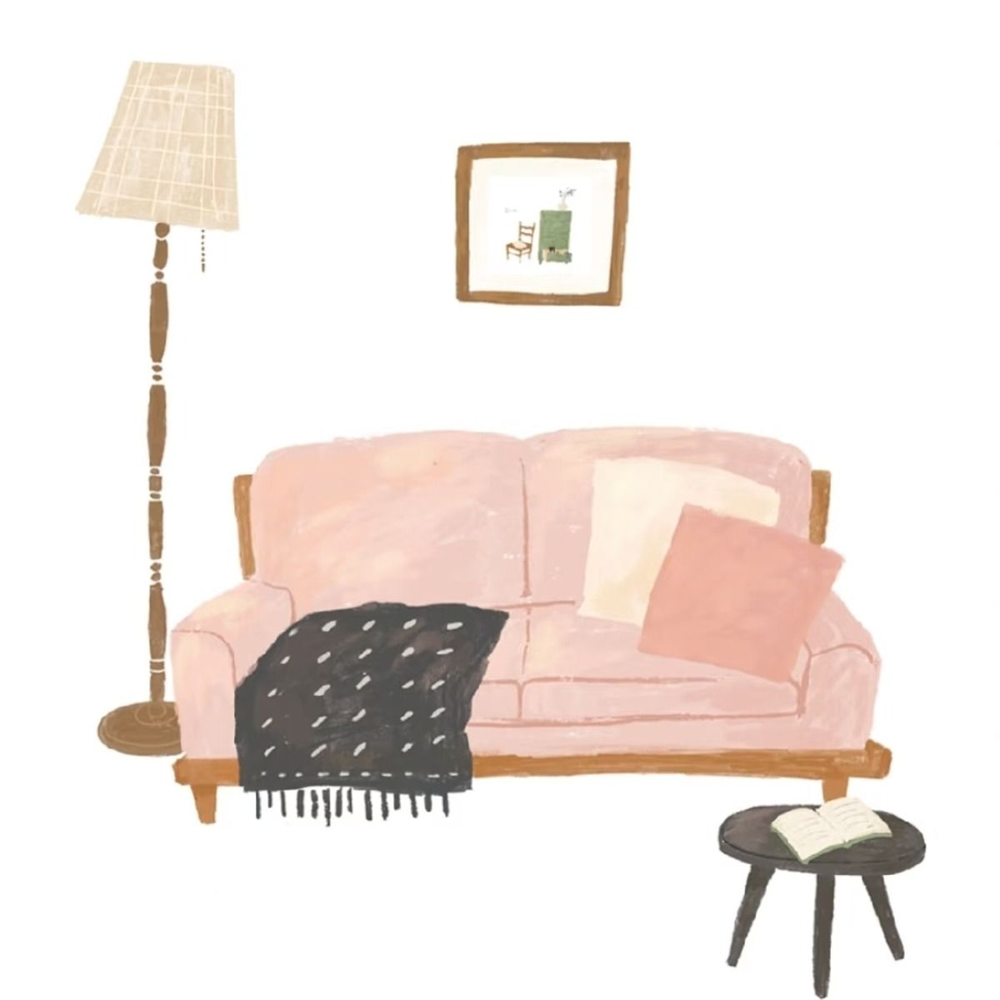

Psychotherapy and The Singular Space
The Singular Space was born out of witnessing, living and learning the profound impact of deep psychological encounters - one that persists in retaining the complexities and contradictions of human life. Grounded in principles of psychoanalytic thought, it attempts to offer a way of understanding mental and emotional suffering not as something to be fixed or eliminated but one that carries meaning, history, and unconscious truth; underneath the suffering. Many have been told “something is wrong with you”- but I consider it vital to make a paradigm shift of “What happened to you? Tell me your story”.
"When we cannot find a way of telling our story, our story tells us – we dream these stories, we develop symptoms, or we find ourselves acting in ways we don’t understand."
- The Examined Life: How we lose and find ourselves by Stephen Grosz
At the heart of it, lies a profound respect for singularity — the idea that no two mental and emotional lives are the same. Every person’s mind follows its own logic, and its own patterns of desire and conflict. In this view, therapy cannot be standardized. Psychological health emerges when the individual is allowed to live their own truths, rather than forced into adaptation or compliance. Singularity, then, is not just individuality - it is the irreducible uniqueness of a person’s emotional life. My approach at The Singular Space rests on this principle of:
- You are not reduced to a diagnosis
- Your experience is not generalised
- Your suffering is not simplified
- Your story is not rushed
Psychoanalytically-oriented Psychotherapy
"The goal of psychotherapy can be thought about in its broadest terms as being oriented toward one of two outcomes: either towards alleviating human suffering or toward promoting human growth."
- Teri Quatman
Psychoanalytically-oriented psychotherapy work is grounded in being long-term, depth-oriented and non-directive; geared towards building insight instead of directive, authoritative, goal-focused and solution focused approaches. It rests on the idea of guided self-exploration and not advice giving.
Authenticity
We work to understand and rework the inner conflicts and sufferings of your present life. The origins of these struggles are often rooted in early family dynamics, childhood experiences, or cultural narratives that shape our reactions without our awareness. Therapy helps you unpack these "old stories," allowing you to move past inherited patterns and tap into your authentic self.
Meaning-Making and Capacity
Navigating the difficulties of life often feels mysterious or unbearable. Through the process of "meaning-making," we translate these confusing experiences into a language you can understand. This leads to catharsis—a release that builds your capacity to express, manage, and tolerate both old wounds and new challenges.
The Language of the Body
Therapy helps you see what you already feel but haven't yet been able to comprehend. Often, the body becomes a reservoir for forgotten or traumatic experiences that we cannot yet put into words. My practice deeply values what is "unsaid" but expressed through physical sensations, as these often hold the key to our most persistent struggles.
The Ultimate Goal
The hope of this work is not just to manage symptoms, but to foster a profound shift in how you inhabit your world. By making the unknown known, you gain the freedom to improve your overall quality of life and cultivate more fulfilling, genuine relationships.
